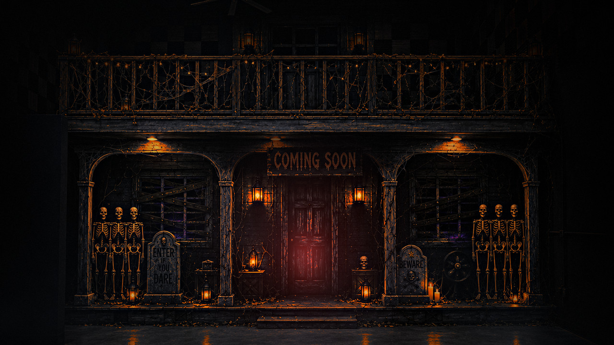

Be first inside.
You’re on the list.We’ll contact you when the house is ready.
Don’t answer the door.
The house opens September 25. 60 minutes. Multiple rooms. One way out.
Don’t come alone.
@hauntedmansion.bk
Bushwick, BrooklynSeptember 25
You’re on the list.We’ll contact you when the house is ready.
Don’t answer the door.
The house opens September 25. 60 minutes. Multiple rooms. One way out.
Don’t come alone.
@hauntedmansion.bk